Accueil
Votre point d'arrivée — on vous accueille, on vous explique, et votre aventure commence.
Une parenthèse tropicale, au cœur de La Réunion
À La Rivière Saint-Louis, découvrez un jardin tropical d'exception. un lieu pensé pour ralentir, contempler et vivre une expérience immersive, en toute simplicité.
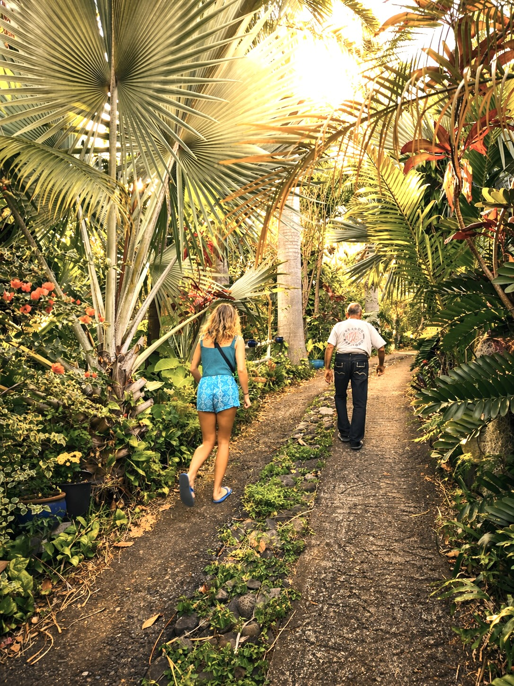
Tout commence en 1990, quand Joseph Fontaine fait l'acquisition d'un terrain d'un hectare et demi à La Rivière Saint-Louis. À l'époque, pas d'arbres, pas de jungle — juste un élevage caprin au milieu de hautes herbes.
Puis vient le cyclone Firinga, les attaques de chiens errants sur le cheptel… Joseph décide alors de changer de cap. Il défriche, nivelle, reconstruit, plante — et donne naissance, pas à pas, à un jardin botanique unique.
Aujourd'hui, ce sont Manon et Nathanaël, accompagnés de Clémence, qui font vivre ce lieu. Avec soin, avec sensibilité — et avec une touche pédagogique et artistique bien à eux.
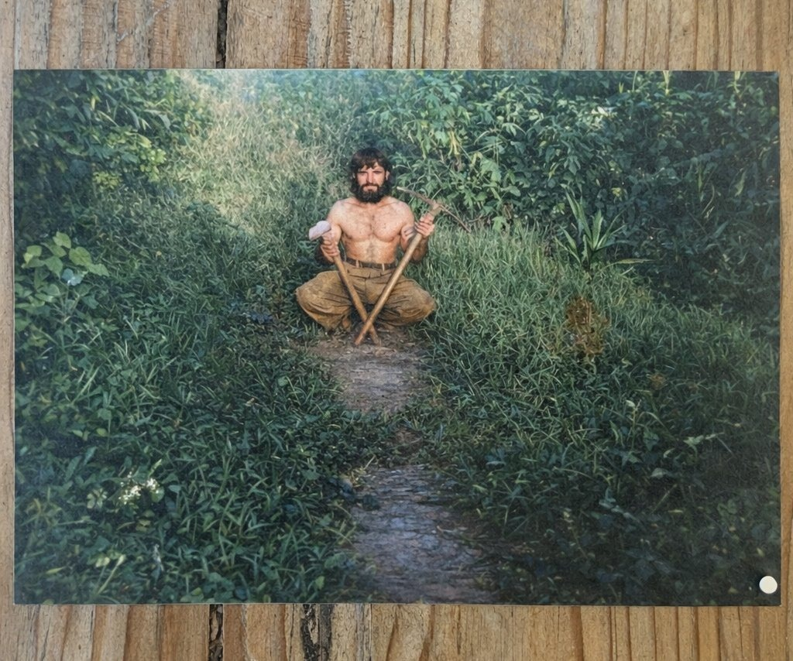
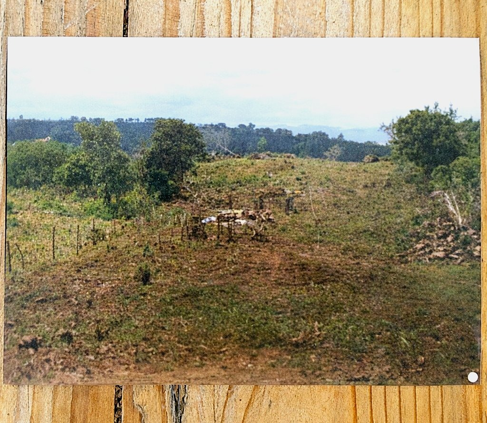
Un parcours pensé pour vous guider en douceur — et deux coins détente pour souffler en chemin.
Votre point d'arrivée — on vous accueille, on vous explique, et votre aventure commence.
Observation, dessin, petits jeux d'exploration : la promenade devient une chasse au trésor.
On prend le temps, on regarde, on écoute — la nature devient soudain le spectacle principal.
Au bout de la partie 2, une perspective qui récompense la balade — et donne envie de s'asseoir.
Une pause ombragée, une citronnade, quelques minutes de silence — mérité.
Un espace pensé pour les enfants — qu'ils courent, jouent, respirent… pendant que vous respirez aussi.
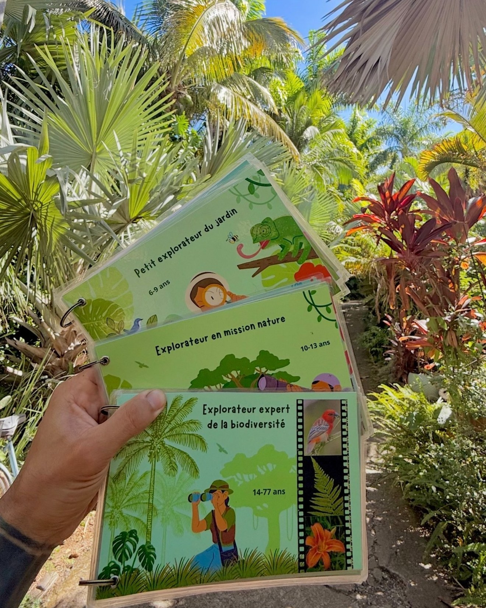
Dès la première partie du parcours, chaque visiteur peut choisir d'explorer le jardin avec notre carnet pédagogique. Un compagnon qui transforme la promenade en petite aventure.
Jungle à Pat' accueille les classes, centres de loisirs et groupes pour une matinée ou une après-midi de découverte à ciel ouvert. Un cadre sécurisé, une nature riche, un outil pédagogique unique.
Découvrir la flore tropicale directement au contact des plantes, sans écran.
Sortir de la classe, bouger, observer, ressentir — apprendre autrement.
Un support ludique pour structurer la visite et la prolonger en classe.
Une approche sensible de la nature, adaptée aux plus jeunes.
Par mail: jungleapat@gmail.com — on s'adapte à votre projet.

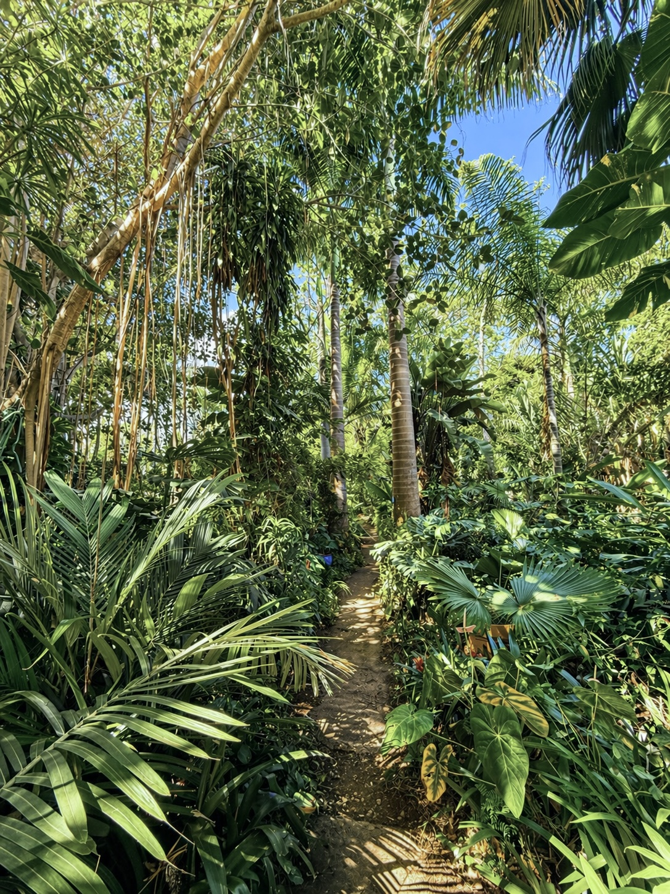
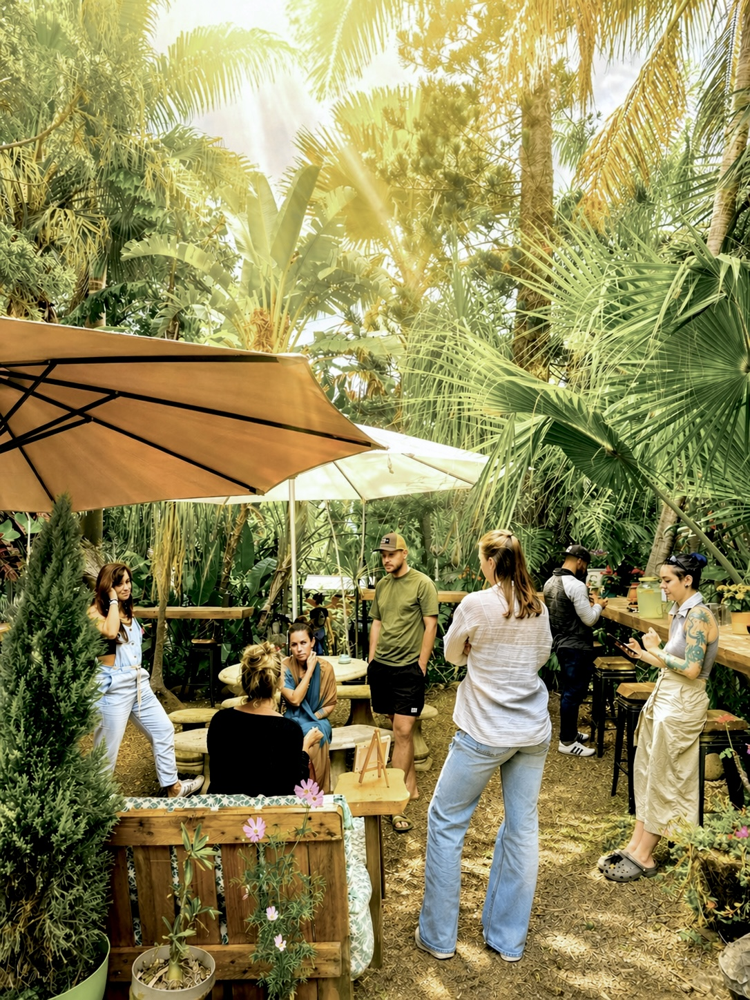
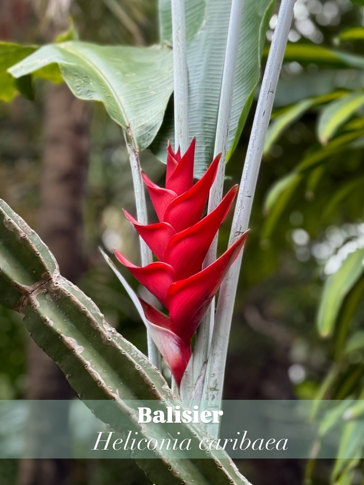
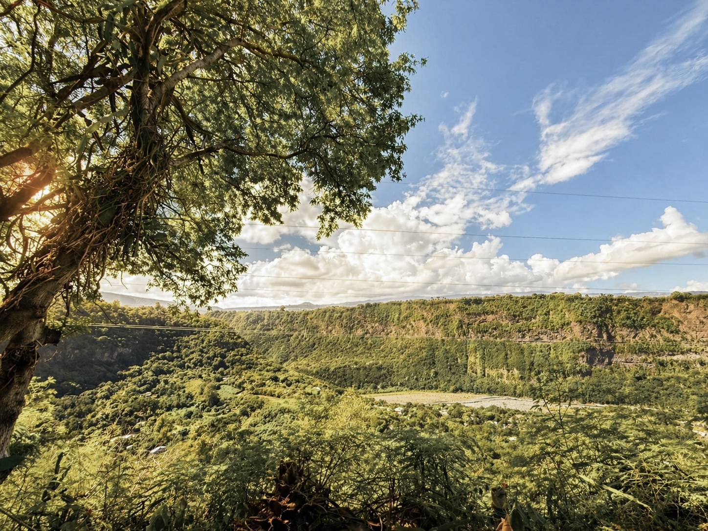
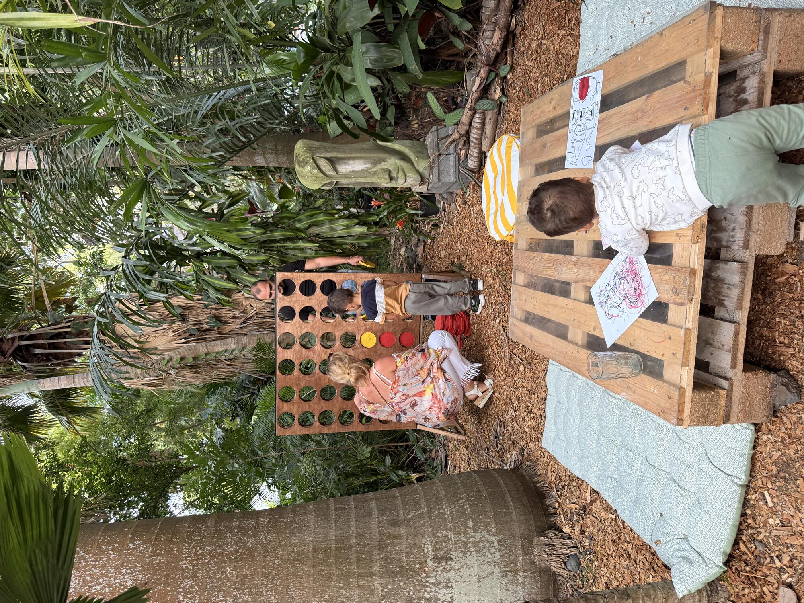
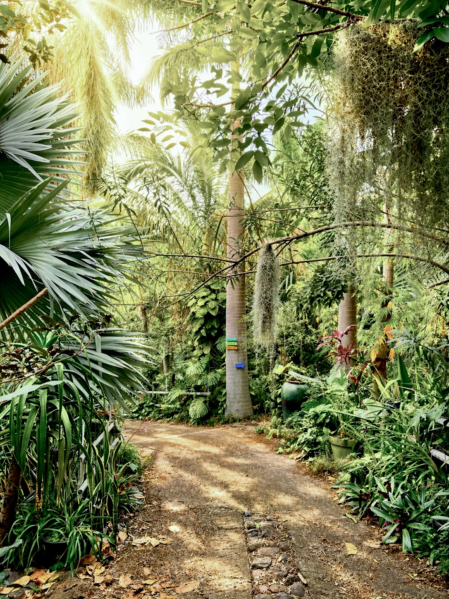
Avant votre venue, découvrez les grands repères du jardin : l'accueil, la partie 1 avec carnet pédagogique, la partie 2, le point de vue, le coin café et le coin marmaille.
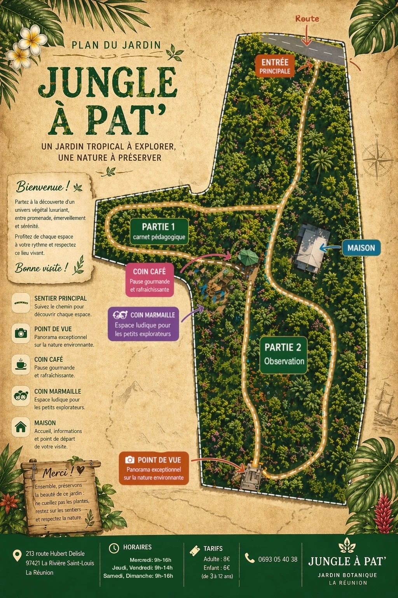
Non, aucune réservation n'est nécessaire pour les visites individuelles et familiales — venez quand vous voulez sur nos horaires d'ouverture. La réservation est uniquement demandée pour les groupes de 10 personnes et plus (écoles, centres de loisirs, groupes organisés), afin de bien vous accueillir.
Le jardin se trouve au 213 route Hubert Delisle, 97421 La Rivière Saint-Louis, à La Réunion. Pour vous y rendre facilement, on vous recommande d'utiliser Google Maps.
Nous sommes ouverts du mercredi au dimanche. Les mercredi, samedi et dimanche : 9h — 16h. Les jeudi et vendredi : 9h — 14h. Fermé le lundi et le mardi.
L'entrée est à 8 € pour les adultes et 6 € pour les enfants de 3 à 12 ans. C'est gratuit pour les moins de 3 ans.
Malheureusement non. Les sentiers sont parfois étroits et parfois rocailleux, ce qui rend l'accès difficile voire impossible en fauteuil roulant ou avec une poussette. N'hésitez pas à nous appeler si vous avez un doute sur l'accessibilité.
Oui, les chiens sont les bienvenus — à condition qu'ils restent en laisse tout au long de la visite.
Oui, vous pouvez pique-niquer sur place. C'est même une excellente idée pour profiter pleinement du jardin et prolonger la visite en famille.
Bien sûr. Nous accueillons régulièrement des classes et centres de loisirs. envoyez nous un mail pour organiser la venue — on s'adapte à votre projet pédagogique. La réservation est obligatoire à partir de 10 personnes.
Oui, un coin café vous attend sur place pour une pause à l'ombre pendant ou après votre visite. Nous y servons essentiellement du sucré : citronnade, gaufres, glaces et autres petites douceurs.
Venez vivre une parenthèse nature au cœur de La Rivière Saint-Louis. Un jardin qui se savoure lentement, une pause qu'on n'oublie pas.
— l'équipe de Jungle a pat'